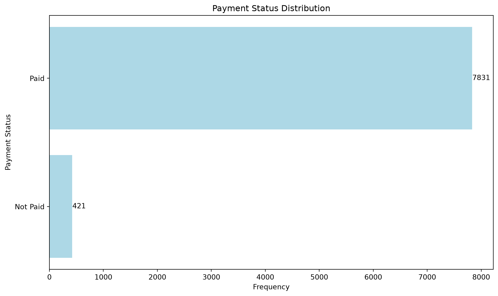
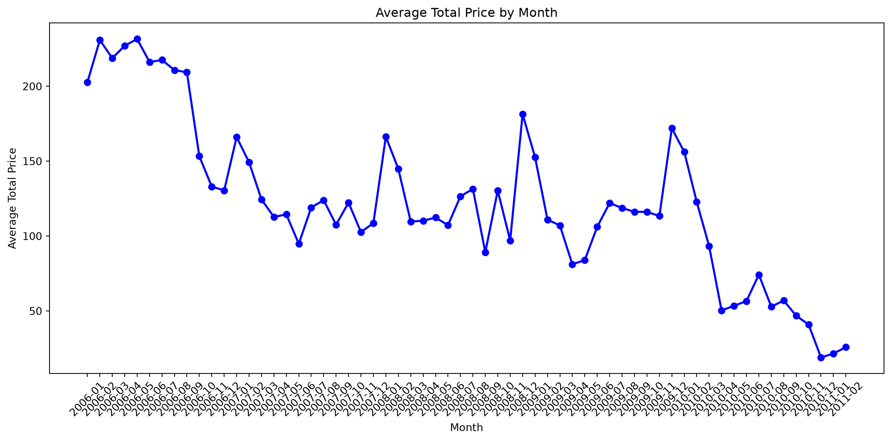
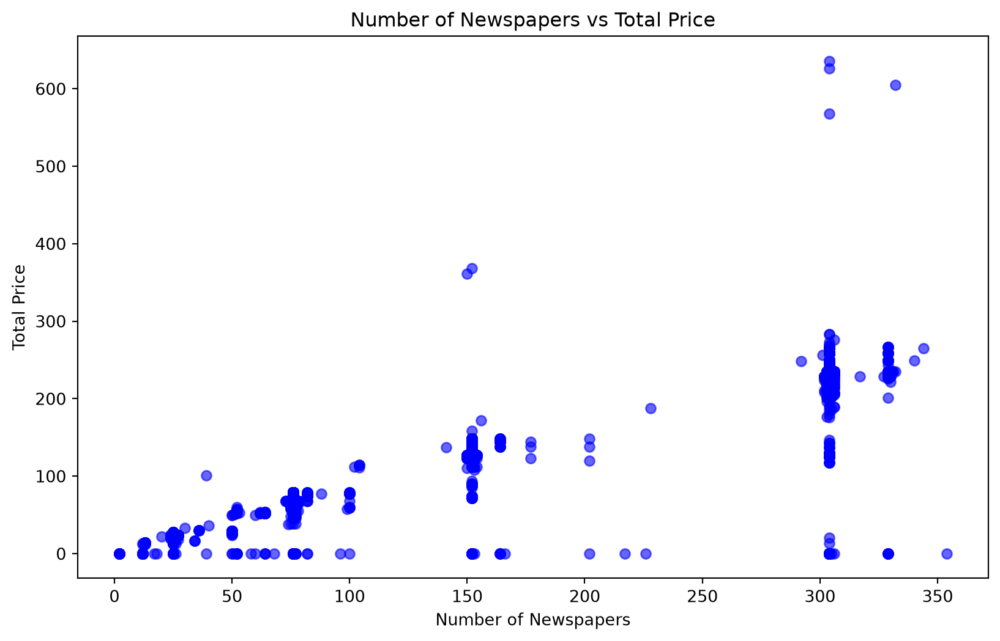
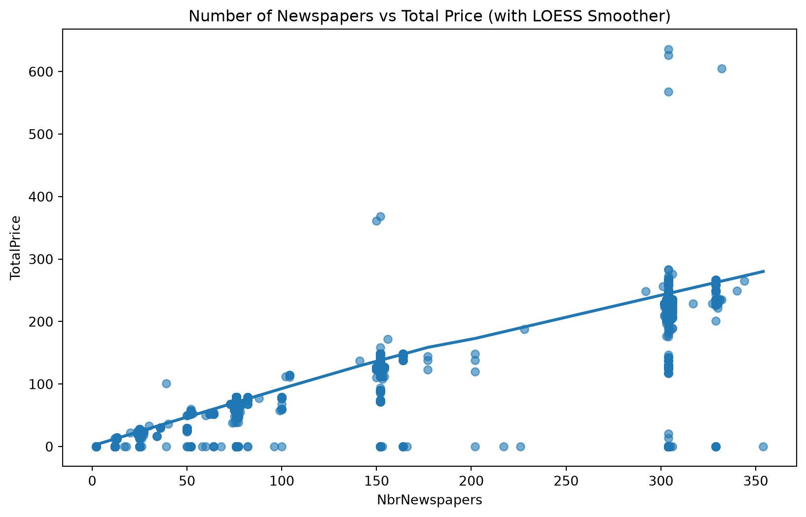
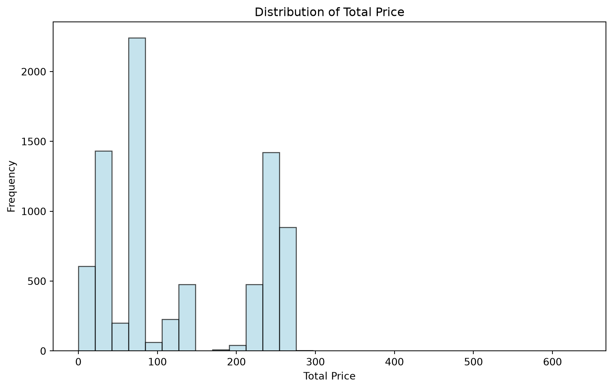
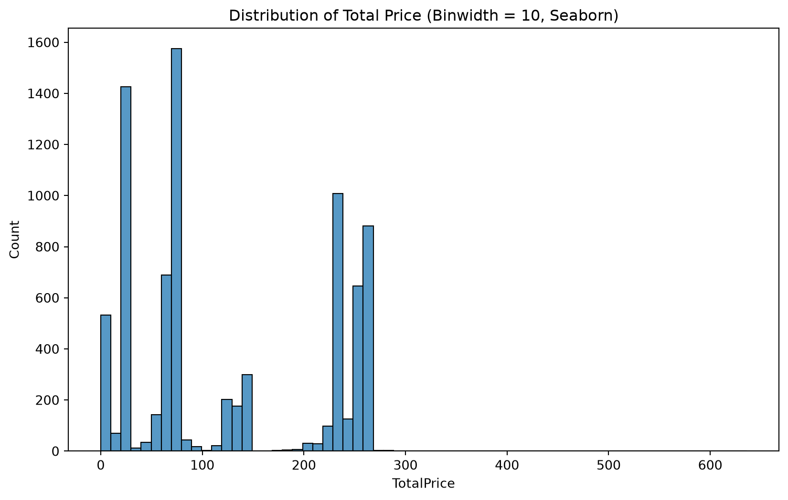
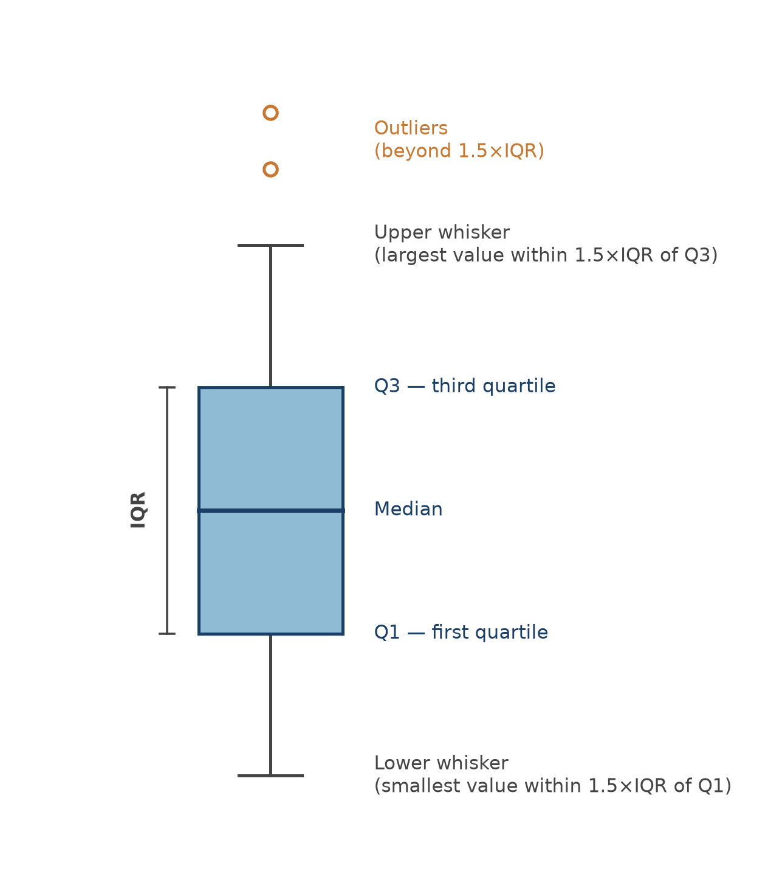
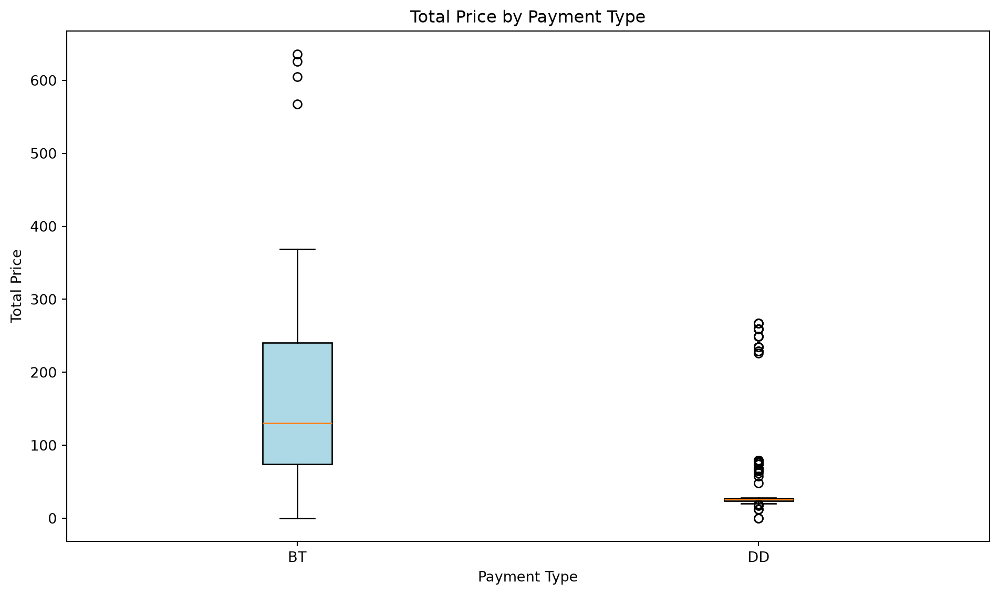
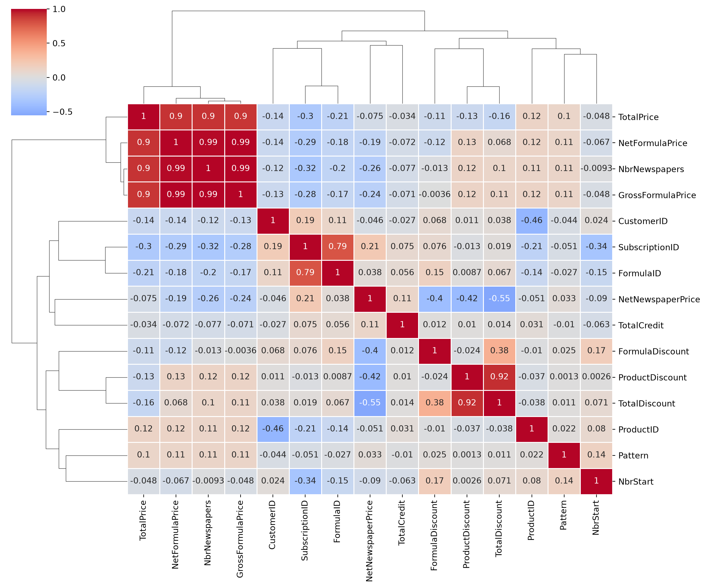
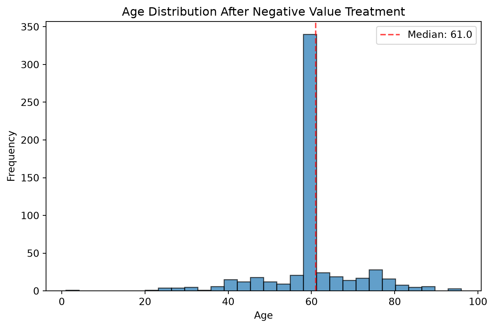

The previous chapter discussed the variable level of data understanding: once you know which tables you have and what type each column is, the next question is what each variable actually looks like, and whether it has quality issues you’ll need to deal with before you can trust a model built on it. That’s what this chapter covers: visualizing individual variables to spot patterns, and detecting and treating the most common data quality issues: multicollinearity, missing values, and outliers.
We’ll continue with NPC’s customers and subscriptions tables from the previous chapter.
4.1 Why visualize
Summary statistics alone can be dangerously misleading. Anscombe’s quartet(Anscombe 1973) is the classic illustration: four small datasets that share the same mean, variance, and correlation for x and y and yet look completely different when plotted. One is a clean linear relationship, one is a clear curve, another has a straight line that fits poorly due to a single outlier, and one is a vertical line of points plus one outlier. .describe() can’t tell these apart. A scatter plot can immediately visualize the differences. That’s the whole point of visual exploration: it shows patterns, outliers, and relationships that summary statistics alone can hide.
It’s worth being clear about what kind of visualization this chapter is about. Visualization serves two different purposes:
Explore: you’re the analyst, and the goal is discovering insights in the data as fast as possible. Speed and discovery matter more than polish.
Explain: someone else is the audience, and the goal is communicating a specific finding or message clearly. It is also more about creating a compelling narrative and conveying your message in the proper way.
This chapter is entirely about the first one. The charts you’ll build here are working tools, not fancy presentation slides.
The charts covered in this chapter are what you need for exploration, but they’re a small fraction of what’s out there. For example, treemaps, Sankey diagrams, spatial maps, slope charts, and dozens of others each have situations where they’re the right option. Once your goal shifts from exploring to explaining, the chart itself is only half the job; the other half is design choices (how to remove clutter, where the attention should go, what to cut) that turn a chart into a story. That’s a large enough topic that it deserves books of its own. Two excellent reading materials, if you want to go deeper: Cole Nussbaumer Knaflic’s Storytelling with Data and Brent Dykes’s Effective Data Storytelling.
4.1.1 Matplotlib basics
Python’s core plotting library is matplotlib. Almost everything in matplotlib follows the same three-part structure:
A figure is the overall canvas.
One or more axes are the actual plotting areas inside that pane (confusingly, one “axes” is a single plot, not an axis line).
An artist is everything else you can see (e.g., lines, text, bars, points).
In practice, you’ll almost always start a plot the same way: create a figure and axes together with plt.subplots(), draw onto the axes using a specific chart type, then label it.
We’ll also use seaborn, a library built on top of matplotlib that trades some of its flexibility for far more concise syntax and better default styling, especially for statistical plots like regression lines, heatmaps, and pair plots.
4.2 The core chart types
There are dozens of chart types, but for data exploration a small toolkit covers almost everything: bar charts, line charts, scatter plots, histograms, and box plots.
To demonstrate these, we will load the NPC data we saved at the end of the previous chapter.
import pandas as pdimport numpy as npimport seaborn as snssubscriptions = pd.read_parquet("../data/raw/subscriptions.parquet")customers = pd.read_parquet("../data/raw/customers.parquet")
4.2.1 Comparing groups: bar charts
A bar chart represents each category’s value or frequency as a vertical or horizontal rectangular bar and is useful whenever you want to compare discrete categories against each other.
Whereas a vertical bar chart is often the default, a horizontal one, with the counts written directly on the bars, is often easier to read once category labels get long:
fig, ax = plt.subplots(figsize=(10, 6))payment_counts = subscriptions["PaymentStatus"].value_counts(ascending=True)bars = ax.barh(payment_counts.index, payment_counts.values, color="lightblue")for bar, value inzip(bars, payment_counts.values): ax.text(bar.get_width() +5, bar.get_y() + bar.get_height() /2,str(value), ha="left", va="center")ax.set_title("Payment Status Distribution")ax.set_xlabel("Frequency")ax.set_ylabel("Payment Status")plt.tight_layout()plt.show()

TipBar chart ground rules
Always plot bars against a zero baseline. Starting the axis somewhere else exaggerates differences and misleads the reader, even if you didn’t mean to. And be cautious with pie and donut charts as an alternative: humans are much better at comparing bar length than comparing angles or areas, so a bar chart usually communicates the same information more clearly.
A lollipop chart, a thin line plus a single dot instead of a full bar, communicates the same comparison with noticeably less visual noise. With a fraction of the ink of a bar chart, it’s often easier for the eye (and brain) to parse (lower noise-to-ink ratio), since there’s less shape to take in per category:
A line chart connects data points to show how a variable changes across an ordered sequence, almost always time but not necessarily.
To show that a line chart can be used to visualize any ordered series, let’s look at a simple example. Plotting TotalPrice’s sorted values against their rank position isn’t a true time series, but it’s a quick way to see the overall shape of a distribution and spot outliers at either end:
For an actual time series, plot against real dates. Here’s the average subscription price by month:
subscriptions_monthly = subscriptions.copy()subscriptions_monthly["StartDate"] = pd.to_datetime(subscriptions_monthly["StartDate"])subscriptions_monthly["YearMonth"] = subscriptions_monthly["StartDate"].dt.to_period("M")monthly_avg = subscriptions_monthly.groupby("YearMonth")["TotalPrice"].mean()fig, ax = plt.subplots(figsize=(12, 6))ax.plot(monthly_avg.index.astype(str), monthly_avg.values, color="blue", linewidth=2, marker="o")ax.set_title("Average Total Price by Month")ax.set_xlabel("Month")ax.set_ylabel("Average Total Price")plt.xticks(rotation=45)plt.tight_layout()plt.show()

A couple of practical rules of thumb: pick a measurement interval that’s neither so long you lose the trend nor so short the chart is dominated by noise. Also, avoid cramming more than about 5–7 lines onto one chart. If you have more than that, split it into several smaller charts instead.
4.2.3 Showing relationships: scatter plots
A scatter plot places one point per observation on two numeric axes, making it easy to spot correlations, clusters, and outliers between two variables at once.
fig, ax = plt.subplots(figsize=(10, 6))ax.scatter(subscriptions["NbrNewspapers"], subscriptions["TotalPrice"], alpha=0.6, color="blue")ax.set_title("Number of Newspapers vs Total Price")ax.set_xlabel("Number of Newspapers")ax.set_ylabel("Total Price")plt.show()

Adding a trend line makes the relationship easier to read at a glance. This is where seaborn starts to pay off against plain matplotlib. sns.regplot() draws the scatter plot and fits a line in one call:
fig, ax = plt.subplots(figsize=(10, 6))sns.regplot(data=subscriptions, x="NbrNewspapers", y="TotalPrice", ax=ax)ax.set_title("Number of Newspapers vs Total Price (with Linear Regression)")plt.show()
If the relationship isn’t linear, a LOESS (locally estimated scatterplot smoothing) curve, a nonparametric fit built from many small local regressions, can reveal a nonlinear trend a straight line would miss:
fig, ax = plt.subplots(figsize=(10, 6))sns.regplot(data=subscriptions, x="NbrNewspapers", y="TotalPrice", lowess=True, scatter_kws={"alpha": 0.6}, ax=ax)ax.set_title("Number of Newspapers vs Total Price (with LOESS Smoother)")plt.show()

In practice, you rarely want just one scatter plot in data exploration. You want to see every pair of numeric variables at once to understand their relationships. seaborn’s pairplot() builds that whole grid in a single call, with histograms of each individual variable down the diagonal:
As with any correlation, keep in mind that a strong relationship in a scatter plot doesn’t imply causation: it’s a pattern worth investigating, not a conclusion on its own.
4.2.4 Showing a distribution: histograms and box plots
A histogram groups a variable’s values into bins and shows how many observations fall into each one. It is considered the standard way to see a variable’s distribution, shape, spread, and skew.
fig, ax = plt.subplots(figsize=(10, 6))ax.hist(subscriptions["TotalPrice"].dropna(), bins=30, color="lightblue", edgecolor="black", alpha=0.7)ax.set_title("Distribution of Total Price")ax.set_xlabel("Total Price")ax.set_ylabel("Frequency")plt.show()

If you don’t specify the bins, matplotlib picks a bin width automatically ((max - min) / number of bins). You can also fix the bin width directly:
seaborn offers the same thing with a nicer default look, and lets you set binwidth directly:
fig, ax = plt.subplots(figsize=(10, 6))sns.histplot(data=subscriptions, x="TotalPrice", binwidth=10, ax=ax)ax.set_title("Distribution of Total Price (Binwidth = 10, Seaborn)")plt.show()

A box plot packs a variable’s median, quartiles, and potential outliers into one compact shape, and is especially useful for comparing a distribution and the basic statistics across groups. Figure 4.1 summarizes the key elements of a box plot.

Figure 4.1: Anatomy of a box plot: the box spans the interquartile range (IQR = Q3 − Q1), the line inside marks the median, and the whiskers extend to the most extreme point within 1.5×IQR of the box. Points beyond that are flagged as potential outliers.
Building this by hand in matplotlib needs the data reshaped into one list per group, which gets verbose fast:
fig, ax = plt.subplots(figsize=(10, 6))data_for_boxplot = [group["TotalPrice"].dropna().valuesfor name, group in subscriptions.groupby("PaymentType")]labels = subscriptions["PaymentType"].dropna().unique()ax.boxplot(data_for_boxplot, tick_labels=labels, patch_artist=True, boxprops=dict(facecolor="lightblue"))ax.set_title("Total Price by Payment Type")ax.set_xlabel("Payment Type")ax.set_ylabel("Total Price")plt.tight_layout()plt.show()

seaborn does the grouping for you, with no reshaping required:
Now that you have a toolkit of charts, it’s time to put it to use on the three data quality issues that come up in almost every dataset: multicollinearity, missing values, and outliers.
Multicollinearity occurs when two or more independent variables are highly correlated with each other. It matters because it makes individual coefficients unstable and hard to interpret in a causal model, and it inflates confidence intervals. Even though, as we saw in the introduction, a purely predictive model can often tolerate it without losing accuracy, it can still undermine any post-hoc explanation of that model (e.g., unstable feature importances) and make the model less robust. pandas computes a full correlation matrix in one call:
A cluster map goes one step further, automatically reordering rows and columns so that similar variables sit next to each other, with a dendrogram showing how they were grouped. Dot heatmaps, where a dot’s size or color, rather than a cell’s fill color, encodes the correlation, are another common variant.
/Users/matthiasbogaert/anaconda3/envs/DA2026/lib/python3.11/site-packages/seaborn/matrix.py:1124: UserWarning: ``square=True`` ignored in clustermap
warnings.warn(msg)

A common rule of thumb is to consider correlation problematic if it’s above 0.75. Two heuristics are often used to decide which variables to drop:
Highest average correlation: find the two most correlated variables, drop whichever of the two has the higher average correlation with everything else, and repeat until nothing is left above the threshold.
Highest correlation pairs: scan variables in order of appearance, and for each one, drop any later variable that’s correlated with it above the threshold. This means that you keep the first occurrence and remove the rest.
The feature_engine library implements the second heuristic directly:
from feature_engine.selection import DropCorrelatedFeaturesdcf = DropCorrelatedFeatures(variables=None, method="pearson", threshold=0.75)dcf.fit(numeric_cols.dropna())print(f"Features to remove: {dcf.features_to_drop_}")
Features to remove: ['SubscriptionID', 'NbrNewspapers', 'NetFormulaPrice', 'TotalPrice', 'TotalDiscount']
A plain pandas version of the same idea is just as easy to write yourself:
def find_correlated_features(corr_matrix, threshold=0.75): upper = corr_matrix.where(np.triu(np.ones(corr_matrix.shape), k=1).astype(bool))return [column for column in upper.columns ifany(upper[column].abs() > threshold)]find_correlated_features(correlation_matrix, threshold=0.75)
We won’t actually drop these variables at this stage. Better feature-selection tools, like regularization, are covered later in the book. But knowing how to detect multicollinearity, and having these heuristics on hand, is worth having before you get there.
4.4 Data quality: missing values
Missing values show up in almost every real dataset, and the right way to handle them depends a lot on why they’re missing in the first place:
Structurally missing: the value was never recorded for a structural reason (e.g., a date-of-birth field that simply wasn’t collected).
Non-applicable: the field doesn’t apply to this record at all (e.g., “time until churn” is meaningless for a customer who hasn’t left).
Informative missing: the fact that a value is missing is itself a signal (e.g., a social media user who hides their hometown may be more privacy-conscious than average and this absence of the value carries information).
It’s also worth distinguishing missing data from censored data: with censored data, you don’t observe the true value, but you do have partial information about it. It often happens when the true value is not available at the time of observation. For example, a tenancy agreement that’s still ongoing when your observation window ends isn’t “missing” its length. You just don’t know the actual end date in the future, and you will consider the true length at least as long as what you’ve observed so far. Hence, in predictive analytics, censored values are usually just used as-is (e.g., treating “still ongoing” as the observed length) rather than treated as missing.
CustomerID 0
Gender 223
DOB 0
District 0
ZIP 0
StreeID 0
dtype: int64
Total missing values: 223
The number of missing values matters as much as the reason: a variable with very few missing values is worth fixing, but one that’s mostly empty (like a RenewalDate column with over 2,000 missing values here) might be better dropped entirely, or replaced with a simple indicator for “was this ever renewed?”, which amounts to the same thing as flagging missingness directly.
4.4.1 A churn model with missing values
To demonstrate missing-value handling on a realistic dataset, we’ll switch to a customer-level table, SubCust, that’s already been built from NPC’s raw tables for a churn model. It comes from joining the subscriptions and customers tables and aggregating to one row per customer, using an independent period to compute predictors from and a dependent period to check whether a customer actually churned. Building a table like this is its own topic. For now we’ll treat SubCust as a given and load it directly.
There are two broad options once you know what’s missing and why: delete the missing rows or columns, or impute. Imputation implies replacing the missing values with a reasonable estimate. Since the missing percentages here are fairly low, imputation is the better choice; deletion mainly makes sense when a column is missing so often it’s barely usable, or a row is missing so much it isn’t worth keeping.
Imputation itself comes in two flavors:
Univariate (simple) imputation: fill missing values with a single summary statistic, like the median for continuous variables, the mode for categorical ones.
Multivariate imputation: model each variable with missing values as a function of the other variables, and use that model’s predictions to fill the gaps.
Univariate imputation with SimpleImputer is the natural starting point:
from sklearn.impute import SimpleImputernumerical_cols_missing = SubCust.select_dtypes(include=[np.number]).columns[ SubCust.select_dtypes(include=[np.number]).isnull().any()].tolist()categorical_cols_missing = SubCust.select_dtypes(include=["object"]).columns[ SubCust.select_dtypes(include=["object"]).isnull().any()].tolist()print(f"Missing values in {len(numerical_cols_missing)} numerical and "f"{len(categorical_cols_missing)} categorical columns")numerical_imputer = SimpleImputer(strategy="median")categorical_imputer = SimpleImputer(strategy="most_frequent")SubCust_simple = SubCust.copy()SubCust_simple[numerical_cols_missing] = numerical_imputer.fit_transform(SubCust[numerical_cols_missing])SubCust_simple[categorical_cols_missing] = categorical_imputer.fit_transform(SubCust[categorical_cols_missing])SubCust_simple[numerical_cols_missing + categorical_cols_missing].isnull().sum()
Missing values in 2 numerical and 1 categorical columns
Multivariate imputation is more sophisticated: scikit-learn’s IterativeImputer implements Multiple Imputation by Chained Equations (MICE). The idea is to loop over every variable that has missing values, treating it as the target of a small regression model built from the other variables, and repeat until the imputed values stabilize:
Fill every missing value with a quick univariate estimate (mean/mode), so every variable has complete data to start from.
Pick one variable with missing values as the target; train a model to predict it from the other variables, using only the rows where there were no missing values originally.
Use that model to re-predict the missing values for this variable, replacing the placeholder estimate from step 1.
Move to the next variable and repeat, now using the freshly updated values as predictors.
Cycle through all variables repeatedly (10 times, by default) until the imputed values stop changing much.
In practice, simple imputation is usually preferred when only a handful of values are missing since it’s fast and easy to reason about. Multivariate imputation earns its extra cost when a larger share of the data is missing and there’s real structure among the variables for it to exploit.
4.4.3 Doing this properly: fitting only on training data
So far we’ve imputed using the entire dataset. That’s fine for a first look, but it hides a real risk once you’re building a predictive model: if the imputation model learns anything from observations you’ll later use to test that model, information has quietly leaked from the test set into training. This is called data leakage and will make your test performance look better than the model would actually achieve on genuinely unseen data.
NoteA preview of the train/test split
We’ll cover train/test splitting properly in the Model Evaluation chapter, but for now the short version is: before doing anything that learns from the data (fitting an imputer, training a model), split your data into a training set to learn from and a test set you hold back untouched, so you have a fair, unseen sample to check performance on later. Any transformation you fit, including an imputer, gets fit on the training set only, then applied or transformed to the test set.
Let’s redo the imputation the proper way using the SimpleImputer. First, split the data, keeping the target variable (churn) and CustomerID aside:
Before imputing anything, it’s worth keeping a record of which values were originally missing, since that’s information in its own right, and it can’t be recovered once the gaps are filled in:
train_missing_flags = pd.DataFrame( {f"{col}_missing": X_train[col].isnull() for col in X_train.columns if X_train[col].isnull().any()}, index=X_train.index,)test_missing_flags = pd.DataFrame( {f"{col}_missing": X_test[col].isnull() for col in X_test.columns if X_test[col].isnull().any()}, index=X_test.index,)print(f"Created {train_missing_flags.shape[1]} missing value indicators")
Created 3 missing value indicators
Now fit the simple imputers on the training set only, and apply them to both sets:
numerical_cols = X_train.select_dtypes(include=[np.number]).columnscategorical_cols = X_train.select_dtypes(include=["object", "category"]).columnsnumerical_imputer = SimpleImputer(strategy="median")categorical_imputer = SimpleImputer(strategy="most_frequent")numerical_imputer.fit(X_train[numerical_cols])categorical_imputer.fit(X_train[categorical_cols])X_train_simple = X_train.copy()X_test_simple = X_test.copy()X_train_simple[numerical_cols] = numerical_imputer.transform(X_train[numerical_cols])X_test_simple[numerical_cols] = numerical_imputer.transform(X_test[numerical_cols])X_train_simple[categorical_cols] = categorical_imputer.transform(X_train[categorical_cols])X_test_simple[categorical_cols] = categorical_imputer.transform(X_test[categorical_cols])# add the missing-value indicators back intrain_data = pd.concat([X_train_simple, train_missing_flags], axis=1)test_data = pd.concat([X_test_simple, test_missing_flags], axis=1)print(f"Final training set with indicators: {train_data.shape}")print(f"Final test set with indicators: {test_data.shape}")
Final training set with indicators: (589, 41)
Final test set with indicators: (589, 41)
The same fit-on-train, transform-to-both pattern works for IterativeImputer too (but only for numerical variables). The only difference is .fit() learns the per-variable regression models from the training set, and .transform() applies them to new rows without re-learning anything:
From here on, we’ll use train_data and test_data, the simple-imputation version, with missing-value indicators attached, as our working datasets.
4.5 Data quality: outliers
An outlier is a data point that sits exceptionally far from the rest of the observations. Not every outlier is a mistake: a genuine CEO salary of €3 million is a valid extreme value, while an age of 270 is clearly invalid. With a small sample, what looks like an outlier can just be the tail of a skewed distribution, or a handful of points from a different population entirely.
4.5.1 Detecting outliers
Detection is either visual (scatter plots, histograms, box plots) or numerical (checking the min/max, or computing a z-score to check how many standard deviations a value sits from the mean). Under a roughly normal distribution, about 95% of values fall within 2 standard deviations of the mean, and 99.7% within 3. So a z-score beyond about ±3 is a common threshold for flagging a point as a potential outlier.
As with imputation, outlier detection should also be done on the training data only, so that whatever rule you land on is validated against data the model hasn’t seen. We’ll also restrict this to numeric variables, since the notion of an “outlier” is mostly a continuous-data concept.
X_train_numeric = train_data.select_dtypes(include=[np.number])print(f"Dimensions of the training data: {X_train_numeric.shape}")
The plots are a starting point, not the analysis itself and it’s worth putting a number on what they show. The box plot rule (anything past 1.5×IQR from the box) gives a quick count of flagged points per variable:
On some variables, this flags well over 10% of all training rows, which is far too many to all be genuine data errors. The z-score rule (flag anything with \(|z| > 3\)) is a useful second opinion, since it reacts differently to skew:
The z-score rule flags far fewer points overall, and not always the same variables: Age tops the IQR list at over 45%, yet doesn’t show up in the z-score table at all. Its few negative values skew the quartiles enough to flag a big chunk of otherwise ordinary ages, without being extreme enough (relative to Age’s overall spread) to trip the ±3 z-score threshold. That gap is the point: neither rule is simply “right” and a mechanical threshold, on its own, doesn’t tell you whether a flagged point is a data error or a genuinely extreme (but valid) observation. That judgment call needs the shape of the distribution, which is exactly what the histograms above show and, in Age’s case, some domain knowledge (negative ages aren’t valid, full stop).
WarningBox plots and histograms can tell different stories
As noticed above, box plots flag anything past 1.5×IQR from the box as a potential outlier. On some variables here, that flags a lot of points as problematic. But look at the matching histograms: several of those distributions are just genuinely skewed (a long right tail of high spenders, say), not full of data errors. The box plot rule is a mechanical threshold, not a verdict. The take-away is: always check the actual shape of the distribution before deciding a flagged point is really a problem.
To be clear, none of this outlier treatment is used to modify train_data or test_data: it’s purely diagnostic, showing what each rule would flag.
4.5.2 Treating outliers
How much outliers matter depends on the model you’re planning to build. Non-parametric models (decision trees, for instance) are often fairly insensitive to them; parametric models (linear and logistic regression) can be thrown off by a handful of extreme points. Once you’ve decided a point is worth addressing:
Invalid observations (like the negative ages above): treat them as missing values, and impute them.
Valid but extreme observations: you have three options. Leave them as-is, cap them (also called truncating or winsorizing: clamp any value beyond a chosen lower/upper limit back to that limit), or convert the variable into categories, which we’ll cover in the next chapter.
In our case, the Age variable needs to be treated, since it includes some negative values. These are invalid since nobody has a negative age. That’s a case where the fix is simple: treat the invalid values as missing, and impute them like any other missing value.
age_median = train_data["Age"][train_data["Age"] >=0].median()train_data.loc[train_data["Age"] <0, "Age"] = np.nantrain_data["Age"] = train_data["Age"].fillna(age_median)plt.figure(figsize=(8, 5))plt.hist(train_data["Age"], bins=30, alpha=0.7, edgecolor="black")plt.title("Age Distribution After Negative Value Treatment")plt.xlabel("Age")plt.ylabel("Frequency")plt.axvline(age_median, color="red", linestyle="--", alpha=0.7, label=f"Median: {age_median:.1f}")plt.legend()plt.show()

4.6 Saving your progress
We’ll pick this up again in the next chapter, so let’s save the cleaned, imputed training and test sets including the target variable as parquet files.
We’ve now covered every level of data understanding: table, data, and variable. The next chapter, Data Preparation, picks up right where this one leaves off with transforming, encoding, and engineering the cleaned train_data and test_data into a model-ready basetable.
Anscombe, Francis J. 1973. “Graphs in Statistical Analysis.”The American Statistician 27 (1): 17–21.